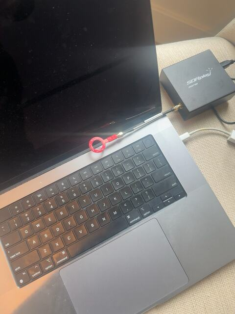

RF / MEMORY / DISCOVERY
Covert Channels
without Coordination.
[Opening copy goes here.]
Explore the capturesMemory workload,
measurable RF.
[Your account of the measurement, controls, and physical mechanism goes here.]
1.505 MHzMac capture band
4Memory workers
0Display or audio signaling

Explore the measured signal
Drag, zoom, and inspect the recording.
A signal a blind
reader can find.
[Your account of the slow cue, repeated setup, and fast payload goes here.]
01Slow cue
02Repeated setup
03Fast payload
04CRC + hash
Inspect the full measured recordingOpen signal explorer
Send a message
from this browser.
The button repeats a memory workload encoding your message until you stop it or leave the page. Reception depends on your device and nearby RF setup.
Browser packet32 ms / chipUp to 34 UTF-8 bytes · repeated continuously